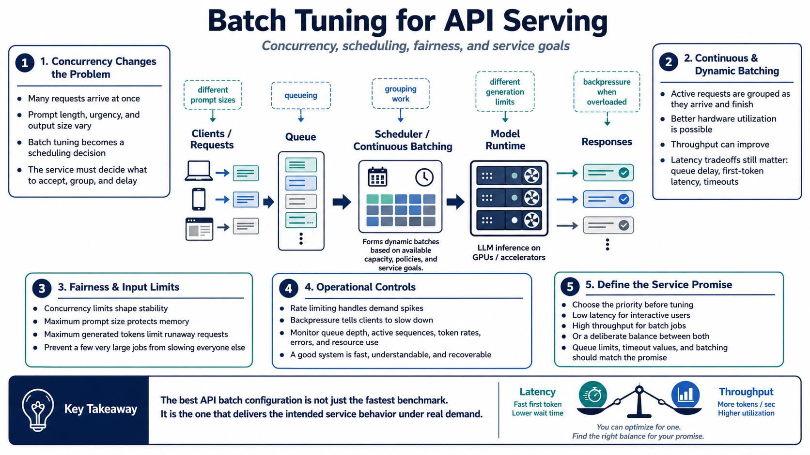

Tuning for API Serving and Throughput
Connecting to LMS... Progress: in progress

Narration
API serving introduces concurrency. Instead of one user waiting on one response, the system may receive many requests with different prompt lengths, generation limits, and urgency. Batch tuning becomes a scheduling problem as much as a raw performance problem. The service has to decide how many requests to accept, how much work to group together, and when to apply backpressure.
Continuous batching and dynamic batching are common serving ideas. At a high level, they let the runtime group active requests in ways that improve hardware utilization while requests arrive and finish at different times. This can improve throughput, but it does not remove latency tradeoffs. Users still care about queue delay, first-token latency, and timeouts.
Concurrency limits, maximum prompt size, and maximum generated tokens are part of batch tuning because they shape the work entering the system. Without limits, a few very large prompts can consume memory and delay everyone else. Fairness matters. A service should avoid letting one request pattern dominate the queue or make normal interactive requests feel unreliable.
Operational controls complete the picture. Rate limiting protects the service from demand spikes. Backpressure tells clients to slow down instead of silently building an unhealthy queue. Monitoring should show queue depth, active sequences, token rates, errors, and resource use. The best throughput configuration is not just fast; it is understandable and recoverable when demand changes.
For API platforms, define the service promise before tuning. Decide whether the priority is low latency for interactive users, high throughput for batch jobs, or a controlled balance between both. Those goals lead to different queue limits, timeout values, and batching choices. Without that service promise, a faster benchmark can still produce a worse product.